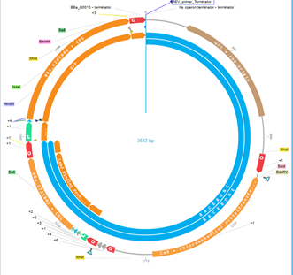

Education
Graduate School
I am a current Masters student in the Purdue College of Medicinal Chemistry and Molecular Pharmacology, taking classes part-time. This continuation of my education is with the aim that I will be more knowledgeable in the characterization and analytic techniques surrounding disease pathophysiology. In addition, I have worked through this program with Dr. Yang Yang. Working with him and his lab has given me a unique opportunity to work with large datasets in the fields of Bioinformatics and Neurological Electrophysiology. I am expected to graduate in the Fall of 2022
Undergraduate School
I graduated in May 2019 from Purdue University with a degree in Biological Engineering with a concentration in Cellular and Biomolecular Engineering. In addition, I took enough courses in mathematics and biotechnology fields to obtain minors in both. My engineering education was largely focused on process engineering. However, the opportunities I had in demonstrating my abilities in mathematical modeling, computational biology, and data science.
Coursework Showcase
Biomolecular Engineering

for use genetic engineering
I was able to take a graduate course with a professor in the Department of Biological Engineering and Biomedical Engineering which culminated in the design of a novel gene casette to be inserted in bacteria. In order to aid in the testing of drinking water, my team designed a gene casette featuring 3543 base pairs capable of being printed and inserted into E. Coli.
Using my knowledge of MATLAB and what we learned from the course in modeling gene and protein expression, I was capable of modeling the feasibility of this design.
Reactor Modeling and Design

As the capstone for graduation, I was the primary computational analyst in our reactor design team. The aim of this project was to design a complete reactor process and economic analysis to determine feasibility in the 2019 market assuming such a process was implemented in the real world.
Our capstone project was the feasibility of a yogurt reactor design. As the computational analyst, I was able to model the entire reactor design using a proprietary software known as SuperPro. And with idealized assumptions, I was able to determine the amount of amount of output expected based on the design. With this information, I was able to complete an economic analysis for profitability in the 2019 market.
Upon completion of this project, this capstone was deemed satisfactory for our team to continue forward with graduation.